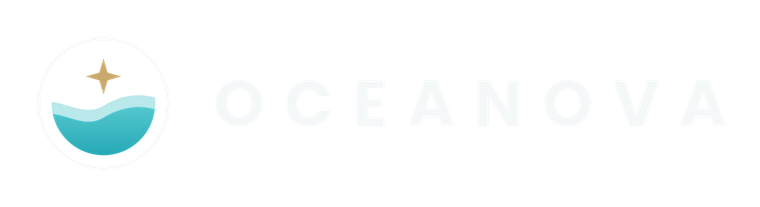

JARAK SENSOR KE AIR
-- cmA01NYUB · pembacaan contoh

Coastal intelligence. Safer communities.
Masuk untuk membuka pusat pemantauan pesisir T-SENSE.
Akses hanya untuk pengguna yang diizinkan. Dengan masuk, Anda menyetujui penggunaan dashboard T-SENSE.
assets/firebase-config.js.Pantau perubahan muka air laut dan status perangkat dalam satu tampilan.
A01NYUB · pembacaan contoh
Terhadap pembacaan awal simulasi
NEO-M8N · data contoh
Belum terhubung ke perangkat fisik
Jarak sensor ke permukaan air · satuan cm
Pembanding muka air laut dari stasiun pasang surut terdekat
Status dari elevasi muka air, jarak ke ambang lokal, dan laju perubahan
Mengumpulkan data epoch pertama…
Z_air(t) = Z_acuan − d(t), dengan d jarak vertikal terkoreksi dari titik acuan ke permukaan air (median sampel valid per epoch).
R = (Z_t − Z_(t−1)) / Δt dalam m/jam, Δt dari stempel waktu aktual. Positif naik, negatif turun. R tidak dihitung bila epoch sebelumnya tidak valid atau Δt tidak sah.
Status ditentukan dari jarak ke ambang lokal (ambang − Z), dan dinaikkan satu tingkat bila R melebihi batas laju cepat saat sudah dekat ambang. Naik status memerlukan beberapa epoch berturut-turut; turun status memakai histeresis. Semua ambang adalah parameter yang wajib dikalibrasi dengan data dan pengukuran lokal (assets/rob-config.json).
Kelola dan unduh data pengukuran pada sesi ini.
| WAKTU | JARAK (CM) | LATITUDE | LONGITUDE | SUMBER |
|---|---|---|---|---|
| Menunggu data simulasi… | ||||
CSV dapat dibuka menggunakan Microsoft Excel. Ekspor ini belum merupakan arsip cloud dan akan hilang saat halaman dimuat ulang.
Atur nama dan pilih ikon animasi bertema OCEANOVA.
Pilihan ikon tersimpan di browser ini untuk akun Anda.